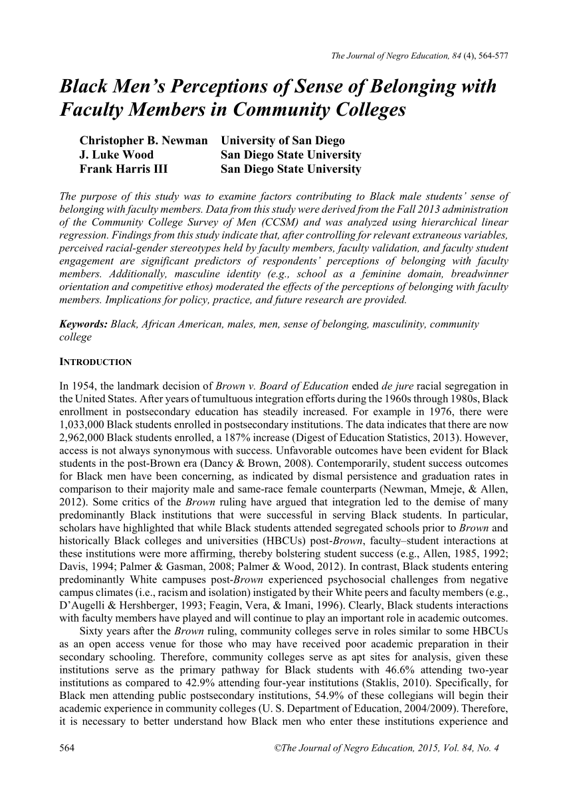
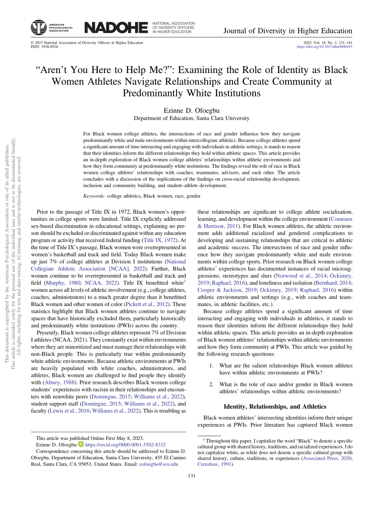

College athletics at predominantly white institutions (PWIs) are highly visible spaces where Black student-athletes are often celebrated for their physical performance, talent, and contribution to institutional success. However, this celebration frequently exists alongside experiences of racial marginalization, isolation, and conditional acceptance. While Black athletes may be applauded on the field or court, their Blackness, and the cultural, social, and political realities that come with it, are often not embraced within the broader campus community.
The purpose of this honors thesis is to examine how Black student-athletes at PWIs experience belonging, identity, and recognition in comparison to their white peers.
This project contributes to ongoing conversations about race, equity, and inclusion in higher education and collegiate sports. The findings aim to inform educators, administrators, and athletic programs seeking to create more inclusive environments for student-athletes of color.

Jolly and Chepyator-Thomson"Do You Really See Us?"
“African American collegiate athletes are perceived to have lowered academic expectations than their white counterparts at academically rigorous institutions. The study revealed the existence of stereotype threat and stereotype reactance for Black athletes at HWIs and the confidence needed for these students to navigate their academic experiences as racial minorities”

